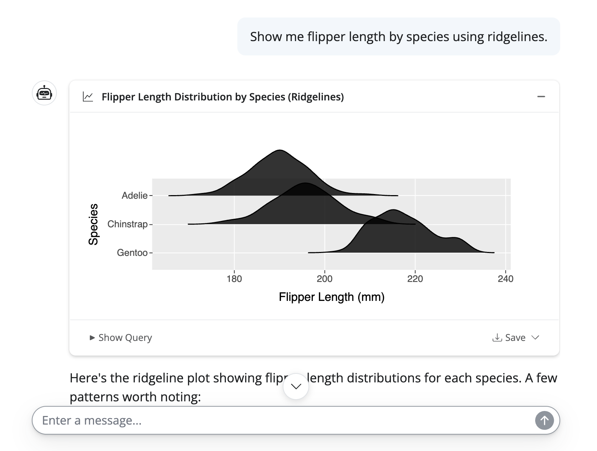
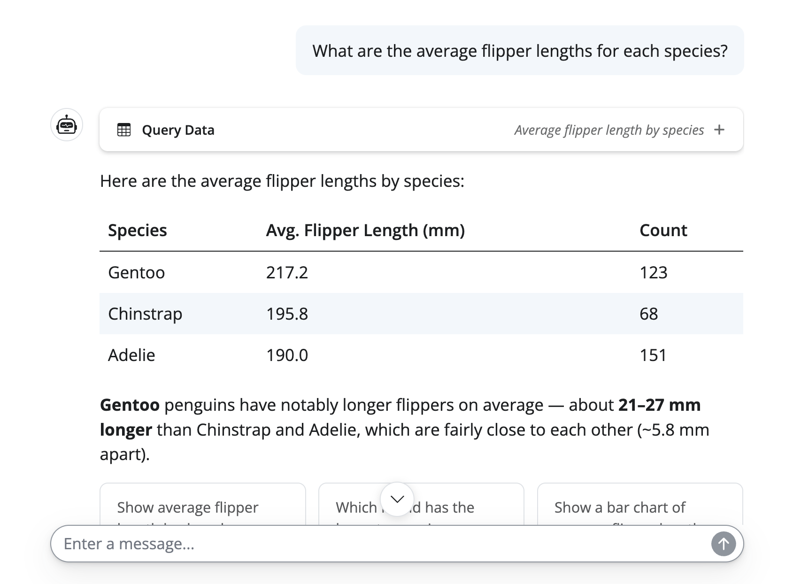
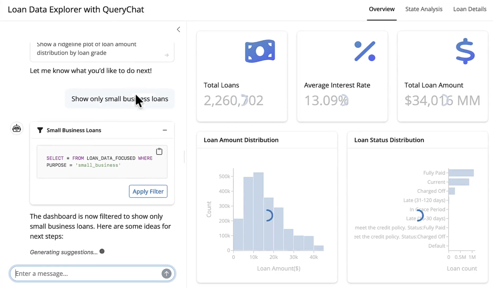
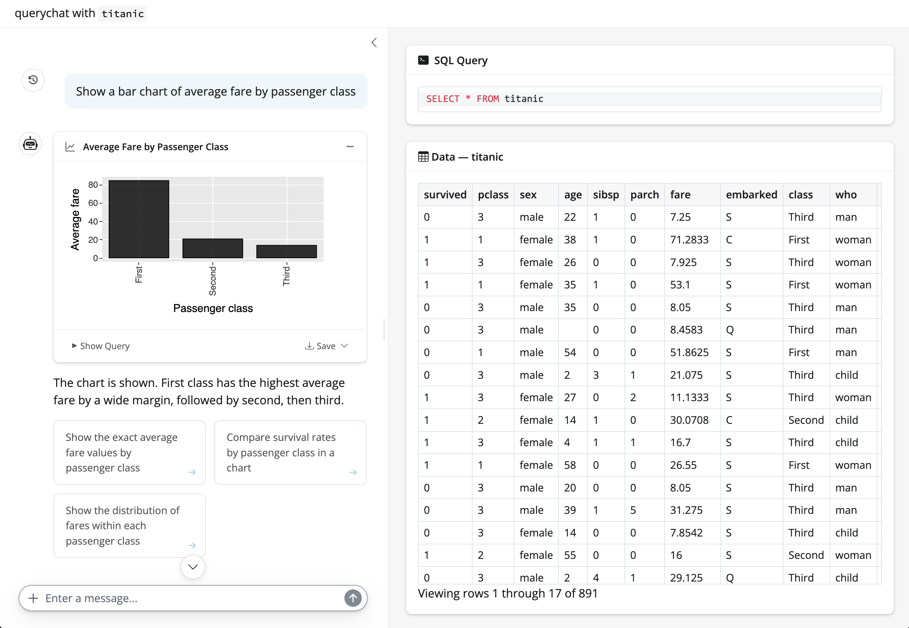

An example of a ‘safe’ and verifiable AI app



Note: all three require only read-only access to the data.
QueryChat auto-generates a system prompt with schema context and instructions for the LLM.app.py

Useful for your own exploration, but for sharing with others, you’ll probably want to build a custom dashboard.
qc.app() does under the hood.qc.sidebar() places the chat in a sidebar.qc.df(): a reactive value containing the filtered dataset.exercises/querychat-app.py and run it.
shiny run exercises/querychat-app.py in terminal."visualize" tool and add print(qc.system_prompt).
client to QueryChat to add custom tools, like a web search tool.exercises/querychat-custom-app.py and run it.